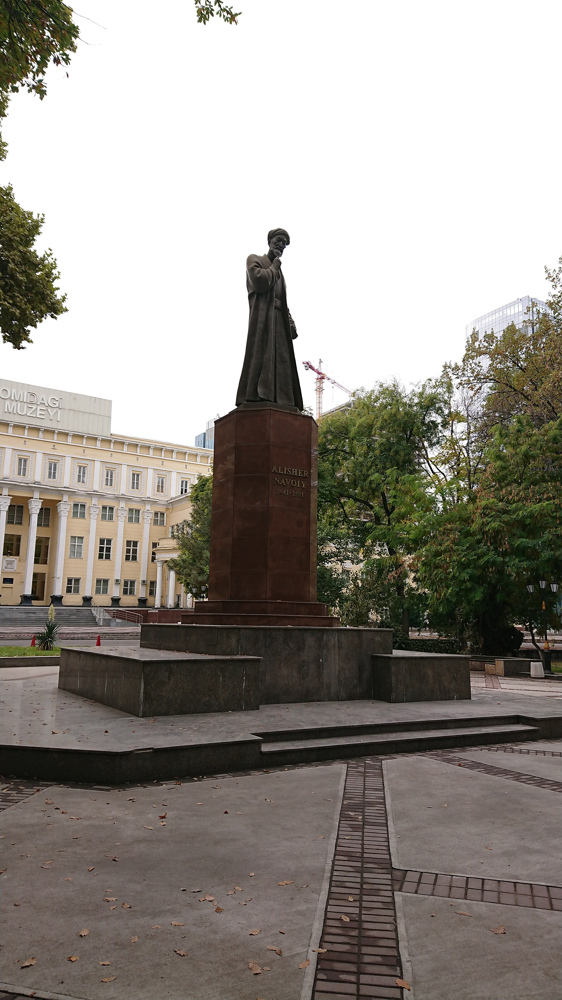

1989-yil “Davlat tili toʻgʻrisida”gi qonun: oʻzbek tili davlat tili boʻldi
1989-yil 21-oktabrda Oʻzbekiston SSR Oliy Kengashi “Davlat tili toʻgʻrisida”gi qonunni qabul qilib, oʻzbek tilini davlat tili deb eʼlon qildi — bu mustaqillik sari muhim milliy-madaniy qadam boʻldi. Qonunning mazmuni, sovet qayta qurish davridagi konteksti (1988–1990-yillardagi til qonunlari toʻlqini), 1995-yildagi tahriri, 1993-yildagi lotin alifbosi qonuni va 1992-yilgi Konstitutsiyada (4-modda) mustahkamlanishi. 21-oktabr 2020-yildan “Oʻzbek tili bayrami” kuni. lex.uz, Konstitutsiya, stat.uz va boshqa manbalarga asoslangan.

1989-yil 21-oktabrda Oʻzbekiston SSR Oliy Kengashi (Oliy Soveti) “Davlat tili toʻgʻrisida”gi qonunni qabul qildi va oʻzbek tili respublikaning davlat (rasmiy) tili deb eʼlon qilindi. Bu — mustaqillikdan qariyb ikki yil oldin qoʻyilgan muhim milliy-madaniy qadam. Quyida qonun mazmuni, tarixiy konteksti va keyingi taqdiri faqat tasdiqlangan faktlar bilan, lex.uz, Oʻzbekiston Respublikasi Konstitutsiyasi (1992), stat.uz va boshqa manbalar asosida bayon etiladi.
Qonunning qabul qilinishi
Qonun 1989-yil 21-oktabrda, № 3561-XI raqami bilan qabul qilingan va “Davlat tili toʻgʻrisida” deb nomlangan. Uni Oʻzbekiston SSR Oliy Kengashi — respublika qonun chiqaruvchi organi (hozirgi Oliy Majlisning oʻtmishdoshi) qabul qilgan. Aynan shu sana — 21-oktabr — bugungi kunda “Oʻzbek tili bayrami” sifatida nishonlanadi: bu bayram 2020-yil 10-aprelda Prezident Shavkat Mirziyoyev imzolagan qonun bilan taʼsis etilgan.
Tarixiy kontekst: qayta qurish davri
Qonun sovet qayta qurish (perestroyka) va oshkoralik davridagi keng toʻlqinning bir qismi edi. 1988–1990-yillarda koʻplab ittifoqdosh respublikalar milliy-madaniy uygʻonish sharoitida oʻz “davlat tili” qonunlarini qabul qildi. SSSRda rus tili millatlararo muloqot tili vazifasini bajarar edi; respublika qonunlari esa titul (asosiy) tillarga davlat maqomini berib, ayni paytda rus tiliga belgilangan oʻrinni saqlab qoldi.
Qonun nima qildi
1989-yilgi qonun oʻzbek tilini respublikaning davlat tili deb belgiladi va uni rasmiy hamda maʼmuriy muomalaga bosqichma-bosqich kiritish uchun oʻtish davrini nazarda tutdi. Shu bilan birga qonun boshqa xalq va millatlarning oʻz ona tilidan foydalanish huquqini kafolatlab, davlat ularning tillarini rivojlantirish uchun sharoit yaratishni oʻz zimmasiga oldi; rus tili millatlararo muloqot tili sifatida belgilangan oʻrinda qoldi.
1995-yilgi tahrir
Qonun 1995-yil 21-dekabrda yangi tahrirda qayta qabul qilindi. Manbalarga koʻra, 1989-yilgi matndagi rus tilining “SSSR xalqlari millatlararo muloqot tili” sifatidagi alohida maqomi 1995-yilgi tahrirda olib tashlandi yoki pasaytirildi; shu tariqa rus tili boshqa millat tillari qatorida koʻrib chiqiladigan boʻldi. Manbalar oʻzgarish yoʻnalishi va sanasi (1995-yil dekabr) boʻyicha bir xil fikrda.
Alifbo masalasi (alohida yoʻnalish)
Til maqomi bilan bogʻliq, ammo alohida yoʻnalish — alifbo. 1993-yil 2-sentabrda Oʻzbekiston lotin yozuviga asoslangan oʻzbek alifbosini joriy etish toʻgʻrisidagi qonunni qabul qildi; alifbo 1995-yilda va keyinroq bir necha bor tahrir qilindi, oʻtish jarayoni esa oʻn yillar davomida toʻliq yakunlanmadi. Bu — davlat tili qonunidan farqli, mustaqil siyosat yoʻnalishi.
Mustaqillikdan keyin: 1992-yilgi Konstitutsiya
Oʻzbekiston 1991-yil 31-avgustda mustaqillikni eʼlon qildi. 1992-yil 8-dekabrda qabul qilingan Konstitutsiya oʻzbek tilining maqomini qayta tasdiqladi: 4-moddada “Oʻzbekiston Respublikasining davlat tili oʻzbek tilidir” deb belgilangan. Shu modda davlat oʻz hududidagi barcha millat va elatlarning tillari, urf-odatlari va anʼanalariga hurmat bilan munosabatda boʻlishini ham kafolatlaydi. Shunday qilib, 1989-yilgi qonun bilan boshlangan yoʻnalish mustaqil davlatning asosiy qonunida mustahkamlandi.